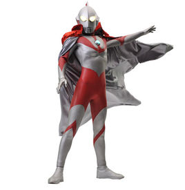
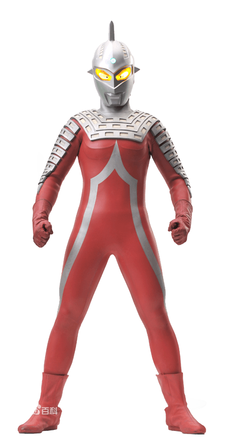
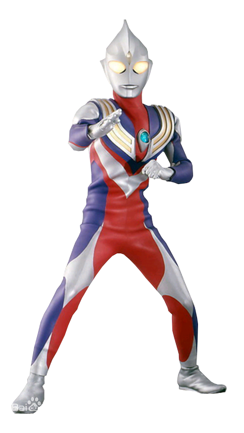
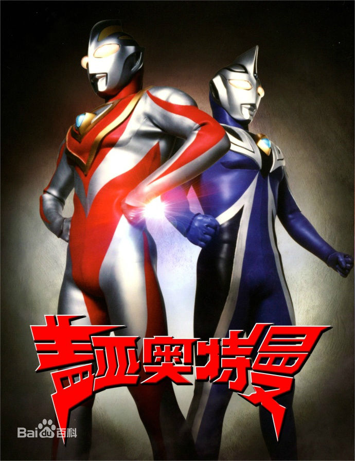
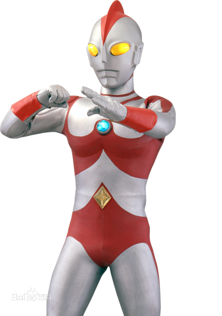
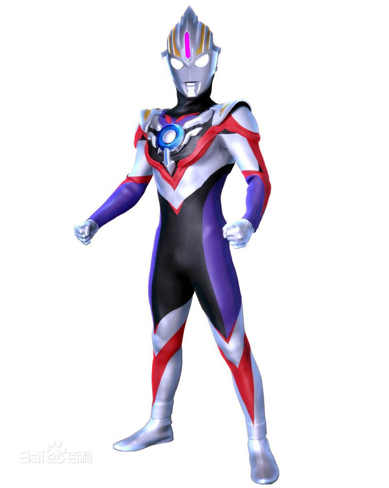
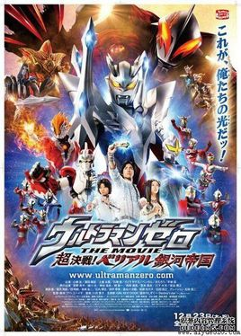

|  | 《奥特曼》 导 演：圆谷英二、圆谷一等 上映时间 ：1966年至今 第一位从M78星云奥特之星来到地球的奥特曼，最初，奥特曼为追击怪兽百慕拉而来到了地球，不料在地球上与早田驾驶的飞机相撞，奥特曼为了救回早田，将自己的生命给予早田，和早田一起为保卫地球的和平而与怪兽战斗。 |
|  | 《赛文奥特曼》 人间体：诸星团 族 系 ：奥特红族 赛文奥特曼圆谷特摄剧《赛文·奥特曼》中的主角。原本是M78星云340号恒星观测员，为制作轨道图而来到了地球，留在地球上与怪兽们战斗。他变成人类的模样，因目睹一个青年的英勇事迹后。以这个青年为原形，化名为诸星团，后加入奥特警备队；决定为保卫地球而战。 |
|  | 《迪迦奥特曼》 人间体：圆大古 变身器：神光棒 迪迦奥特曼是圆谷特摄剧《迪迦奥特曼》中的主人公。属于平成系奥特曼，不同于其他奥特曼的是，迪迦奥特曼是超古代时期就出现在地球的巨人，但并非地球出生的奥特曼。迪迦奥特曼本来是和三个黑暗巨人在一起的邪恶奥特曼，后来因超古代时期的地球警备队队长幽怜劝说下弃暗投明， 获得了光之力量，并打倒本是同伴的三个黑暗巨人，吸收他们的力量，最终成为光之巨人迪迦奥特曼。 |
|  | 《盖亚奥特曼》 首播时间 ：1998年9月5日 主 演吉冈毅志，高野八诚，桥本爱，中上雅巳，宇梶剛士，渡边裕之 《盖亚·奥特曼》是《葛雷·奥特曼》、《帕瓦特·奥特曼》、《迪迦·奥特曼》和《戴拿·奥特曼》之后的第五部平成系《奥特曼》系列作品。是平成三部曲最后一部。盖亚奥特曼代表的是大地之意，阿古茹奥特曼代表的则是海洋之意。除了盖亚奥特曼以外，盖亚奥特曼的竞争对手阿古茹奥特曼以及一套全新的世界观剧情纷纷亮相，它是20世纪末一部很好的《奥特曼》作品，评价也是十分的高。 |
|  | 《爱迪奥特曼》 变身器 ：艾迪电光棒 人间体：矢的猛 艾迪奥特曼是圆谷特摄剧《艾迪奥特曼》的主人公。是奥特宇宙警备队成员，光之国负能量调查员，奥特曼兄弟第九位成员。艾迪的战斗方式以杂技般的跳跃和丰富多彩的光线技为特征，艾迪奥特曼是昭和系奥特曼中唯一没有战败记录的奥特曼，是昭和系奥特曼中的的“全能王”。 |
| 《赛罗奥特曼 》 人间体 岚、大河望、伊贺栗令人 武 器 赛罗头镖、帕拉吉之盾 赛罗·奥特曼是赛文·奥特曼的儿子，光之国的新生代奥特战士。隶属于宇宙警备队，创建了终极赛罗警备队，是M78星云光之国年轻而强大的奥特战士。曾因年少叛逆意图触碰等离子火花塔的能量核，险些酿成大错，之后赛文·奥特曼把他托付给雷欧·奥特曼训练，目的是塑造强大的内心。后从奥特之王口中才了解自己的身世，并和伙伴们一起成功拯救被贝利亚·奥特曼威胁的光之国。 |
|
|  | 《欧布奥特曼》 主 演：石黑英雄，青柳尊哉，松浦雅，高橘直人，练尾弘晃，柳泽慎吾 上映时间 2016年7月9日起每周六9:00（东京时间 为了从魔王兽的复活中保护地球，从银河的远方来到地球的光之战士，欧布奥特曼。在地球上自称红凯，作为流浪青年无定向及持续地漂泊旅行。 红凯为了打倒复活的魔王兽，将昔日奥特英雄们封印魔王兽并留下来的力量以“欧布圆环 Orb Ring”变成卡牌，以此来获得“奥特融合卡 Ultra Fusion Card”。 |
|  | 《赛罗奥特曼THEMOVIE超决战！贝利亚银河帝国》 上映时间：2010年12月23日 上映时间 2010年12月23日 《赛罗奥特曼THE MOVIE超决战！贝利亚银河帝国》2010年12月23日在日本上映，是由アベユーイチ导演的科幻动作电影，该片为奥特曼系列诞生45周年的纪念作品。 该片讲述了贝利亚·奥特曼复活成为凯撒贝利亚，并建立起贝利亚银河帝国，诺亚赐予赛罗盾，赛罗进化成攻守发挥到最强状态的究极形态。 |